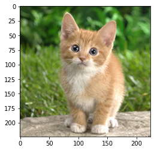

在 VTA 上从 MxNet 部署预先训练的视觉模型
导航
在 VTA 上从 MxNet 部署预先训练的视觉模型#
Author: Thierry Moreau
本教程提供了端到端的演示，介绍了如何在 VTA 加速器设计上运行 ImageNet 分类推理来执行 ImageNet 分类任务。 它将 Relay 展示为前端编译器，它可以执行量化（VTA 只支持 int8/32 推断）和 graph packing（以便在 core 中支持张量化），从而为硬件目标处理计算图。
安装依赖#
要在 tvm 中使用 autovm 包，需要安装一些额外的依赖项。（如果你使用 python2，将 “3” 改为 “2”）：
pip3 install --user mxnet requests "Pillow<7"
现在回到 python 代码。导入包。
import set_env # 加载 TVM/VTA 环境
from __future__ import absolute_import, print_function
import time
from os.path import join, isfile
from PIL import Image
from mxnet.gluon.model_zoo import vision
import numpy as np
from matplotlib import pyplot as plt
import tvm
from tvm import rpc, autotvm, relay
from tvm.contrib import graph_executor, utils, download
# from tvm.contrib.debugger import debug_executor
# from tvm.relay import transform
import vta
from vta.testing import simulator
from vta.top import graph_pack
# 确保使用 RPC=1 编译 TVM
assert tvm.runtime.enabled("rpc")
定义 platform 和 model 目标#
在 CPU 和 VTA 上执行，并定义模型。
# 从 3rdparty/vta-hw/config/vta_config.json 文件加载 VTA 参数
env = vta.get_env()
# 设置 ``device=arm_cpu`` 以在 CPU 运行推理
# 或 ``device=vta`` 以在 FPGA 运行推理。
device = "vta"
target = env.target if device == "vta" else env.target_vta_cpu
# 字典查找何时开始/结束 bit packing
pack_dict = {
"resnet18_v1": ["nn.max_pool2d", "nn.global_avg_pool2d"],
"resnet34_v1": ["nn.max_pool2d", "nn.global_avg_pool2d"],
"resnet18_v2": ["nn.max_pool2d", "nn.global_avg_pool2d"],
"resnet34_v2": ["nn.max_pool2d", "nn.global_avg_pool2d"],
"resnet50_v2": ["nn.max_pool2d", "nn.global_avg_pool2d"],
"resnet101_v2": ["nn.max_pool2d", "nn.global_avg_pool2d"],
}
# 要编译的 Gluon 模型的名称
model = "resnet18_v1"
assert model in pack_dict
备注
start_pack 和 stop_pack 标签指示从哪里开始和结束 graph packing relay pass：换句话说，从哪里开始和结束向 VTA 卸载。
获取远程执行#
当 target 为 ‘pynq’ 时，重新配置 FPGA 和 runtime。否则，如果 target 为 ‘sim’，则在本地执行。
import os
if env.TARGET not in ["sim", "tsim", "intelfocl"]:
# 如果设置了环境变量，则从 tracker 节点获取远程数据。
# 要设置 tracker，您需要遵循“自动调优 VTA 卷积网络”教程。
tracker_host = os.environ.get("TVM_TRACKER_HOST", None)
tracker_port = os.environ.get("TVM_TRACKER_PORT", None)
# 否则，如果您有 device，您想要直接从主机编程，
# 确保您已经将下面的变量设置为您的 board 的 IP。
device_host = os.environ.get("VTA_RPC_HOST", "192.168.2.99")
device_port = os.environ.get("VTA_RPC_PORT", "9091")
if not tracker_host or not tracker_port:
remote = rpc.connect(device_host, int(device_port))
else:
remote = autotvm.measure.request_remote(
env.TARGET, tracker_host, int(tracker_port), timeout=10000
)
# 重新配置 JIT 运行时和 FPGA。
# 通过将路径传递到 bitstream 文件而不是 None，
# 您可以使用自己的自定义 bitstream 来编程 FPGA。
reconfig_start = time.time()
vta.reconfig_runtime(remote)
vta.program_fpga(remote, bitstream=None)
reconfig_time = time.time() - reconfig_start
print("Reconfigured FPGA and RPC runtime in {0:.2f}s!".format(reconfig_time))
# 在仿真模式下，本地托管 RPC 服务器。
else:
remote = rpc.LocalSession()
if env.TARGET in ["intelfocl"]:
# program intelfocl aocx
vta.program_fpga(remote, bitstream="vta.bitstream")
# 从远程获取执行上下文
ctx = remote.ext_dev(0) if device == "vta" else remote.cpu(0)
构建 graph executor 推理#
从 Gluon 模型动物园抓取视觉模型，用 Relay 编译。编译步骤如下：
将 MXNet 前端模块翻译为 Relay 模块。
应用 8-bit 量化：这里我们跳过了第一个 conv 层和 dense 层，这两个层都将在 CPU 上的 fp32 中执行。
执行 graph packing 来改变张量化的数据布局。
进行常数折叠以减少算子的数量（例如，消除 batch norm multiply）。
执行对 object 文件的 relay 构建。
将 object 文件加载到远程（FPGA 设备）。
生成图执行器（graph executor）
m。
# 加载预配置 AutoTVM 调度
with autotvm.tophub.context(target):
# 为 ImageNet 分类器输入填充形状和数据类型字典
dtype_dict = {"data": "float32"}
shape_dict = {"data": (env.BATCH, 3, 224, 224)}
# 取下架子上的 gluon 模型，并转换为 relay
gluon_model = vision.get_model(model, pretrained=True)
# 度量开始构建的时间
build_start = time.time()
# 开始前端编译
mod, params = relay.frontend.from_mxnet(gluon_model, shape_dict)
# 更新 shape 和 type 字典
shape_dict.update({k: v.shape for k, v in params.items()})
dtype_dict.update({k: str(v.dtype) for k, v in params.items()})
if target.device_name == "vta":
# 在 Relay 中执行量化
# 注意：将 opt_level 设置为 3，以便折叠 batch norm
with tvm.transform.PassContext(opt_level=3):
with relay.quantize.qconfig(global_scale=8.0, skip_conv_layers=[0]):
mod = relay.quantize.quantize(mod, params=params)
# 对 VTA target 进行 graph packing 和常数折叠
assert env.BLOCK_IN == env.BLOCK_OUT
# do device annotation if target is intelfocl or sim
relay_prog = graph_pack(
mod["main"],
env.BATCH,
env.BLOCK_OUT,
env.WGT_WIDTH,
start_name=pack_dict[model][0],
stop_name=pack_dict[model][1],
device_annot=(env.TARGET == "intelfocl"),
)
else:
relay_prog = mod["main"]
# 于 AlterOpLayout 禁用下，编译 Relay 程序
if target.device_name != "vta":
with tvm.transform.PassContext(opt_level=3, disabled_pass={"AlterOpLayout"}):
graph, lib, params = relay.build(
relay_prog, target=tvm.target.Target(target, host=env.target_host), params=params
)
else:
if env.TARGET == "intelfocl":
# 多 target 运行（cpu 和 vta）
target = {"cpu": env.target_vta_cpu, "ext_dev": target}
with vta.build_config(opt_level=3, disabled_pass={"AlterOpLayout"}):
graph, lib, params = relay.build(
relay_prog, target=tvm.target.Target(target, host=env.target_host), params=params
)
# 度量 Relay 构建时间
build_time = time.time() - build_start
print(model + " inference graph built in {0:.2f}s!".format(build_time))
# 将 inference 库发送到远程 RPC 服务器
temp = utils.tempdir()
lib.export_library(temp.relpath("graphlib.tar"))
remote.upload(temp.relpath("graphlib.tar"))
lib = remote.load_module("graphlib.tar")
if env.TARGET == "intelfocl":
ctxes = [remote.ext_dev(0), remote.cpu(0)]
# m = graph_executor.GraphModule()
m = graph_executor.create(graph, lib, ctxes)
else:
# Graph runtime
m = graph_executor.create(graph, lib, ctx)
resnet18_v1 inference graph built in 34.30s!
One or more operators have not been tuned. Please tune your model for better performance. Use DEBUG logging level to see more details.
[16:54:56] /media/pc/data/4tb/lxw/study/tvm/src/tir/transforms/arg_binder.cc:95: Warning: Trying to bind buffer to another one with lower alignment requirement required_alignment=256, provided_alignment=128
[16:54:56] /media/pc/data/4tb/lxw/study/tvm/src/tir/transforms/arg_binder.cc:95: Warning: Trying to bind buffer to another one with lower alignment requirement required_alignment=256, provided_alignment=128
[16:54:57] /media/pc/data/4tb/lxw/study/tvm/src/tir/transforms/arg_binder.cc:95: Warning: Trying to bind buffer to another one with lower alignment requirement required_alignment=256, provided_alignment=128
[16:54:57] /media/pc/data/4tb/lxw/study/tvm/src/tir/transforms/arg_binder.cc:95: Warning: Trying to bind buffer to another one with lower alignment requirement required_alignment=256, provided_alignment=128
[16:54:57] /media/pc/data/4tb/lxw/study/tvm/src/tir/transforms/arg_binder.cc:95: Warning: Trying to bind buffer to another one with lower alignment requirement required_alignment=256, provided_alignment=128
[16:54:57] /media/pc/data/4tb/lxw/study/tvm/src/tir/transforms/arg_binder.cc:95: Warning: Trying to bind buffer to another one with lower alignment requirement required_alignment=256, provided_alignment=128
[16:54:58] /media/pc/data/4tb/lxw/study/tvm/src/tir/transforms/arg_binder.cc:95: Warning: Trying to bind buffer to another one with lower alignment requirement required_alignment=256, provided_alignment=128
[16:54:58] /media/pc/data/4tb/lxw/study/tvm/src/tir/transforms/arg_binder.cc:95: Warning: Trying to bind buffer to another one with lower alignment requirement required_alignment=256, provided_alignment=128
[16:54:58] /media/pc/data/4tb/lxw/study/tvm/src/tir/transforms/arg_binder.cc:95: Warning: Trying to bind buffer to another one with lower alignment requirement required_alignment=256, provided_alignment=128
[16:54:58] /media/pc/data/4tb/lxw/study/tvm/src/tir/transforms/arg_binder.cc:95: Warning: Trying to bind buffer to another one with lower alignment requirement required_alignment=256, provided_alignment=128
[16:54:58] /media/pc/data/4tb/lxw/study/tvm/src/tir/transforms/arg_binder.cc:95: Warning: Trying to bind buffer to another one with lower alignment requirement required_alignment=256, provided_alignment=128
[16:54:59] /media/pc/data/4tb/lxw/study/tvm/src/tir/transforms/arg_binder.cc:95: Warning: Trying to bind buffer to another one with lower alignment requirement required_alignment=256, provided_alignment=128
[16:54:59] /media/pc/data/4tb/lxw/study/tvm/src/tir/transforms/arg_binder.cc:95: Warning: Trying to bind buffer to another one with lower alignment requirement required_alignment=256, provided_alignment=128
[16:54:59] /media/pc/data/4tb/lxw/study/tvm/src/tir/transforms/arg_binder.cc:95: Warning: Trying to bind buffer to another one with lower alignment requirement required_alignment=256, provided_alignment=128
[16:54:59] /media/pc/data/4tb/lxw/study/tvm/src/tir/transforms/arg_binder.cc:95: Warning: Trying to bind buffer to another one with lower alignment requirement required_alignment=256, provided_alignment=128
[16:54:59] /media/pc/data/4tb/lxw/study/tvm/src/tir/transforms/arg_binder.cc:95: Warning: Trying to bind buffer to another one with lower alignment requirement required_alignment=256, provided_alignment=128
/tmp/ipykernel_2668352/2984134424.py:52: DeprecationWarning: legacy graph executor behavior of producing json / lib / params will be removed in the next release. Please see documents of tvm.contrib.graph_executor.GraphModule for the new recommended usage.
graph, lib, params = relay.build(
进行图像分类推理#
只需要下载 category 文件，synset.txt 和输入测试图像。
# Download ImageNet categories
categ_url = "https://github.com/uwsampl/web-data/raw/main/vta/models/"
categ_fn = "synset.txt"
download.download(join(categ_url, categ_fn), categ_fn)
synset = eval(open(categ_fn).read())
# Download test image
image_url = "https://homes.cs.washington.edu/~moreau/media/vta/cat.jpg"
image_fn = "cat.png"
download.download(image_url, image_fn)
# Prepare test image for inference
image = Image.open(image_fn).resize((224, 224))
plt.imshow(image)
plt.show()
image = np.array(image) - np.array([123.0, 117.0, 104.0])
image /= np.array([58.395, 57.12, 57.375])
image = image.transpose((2, 0, 1))
image = image[np.newaxis, :]
image = np.repeat(image, env.BATCH, axis=0)
# Set the network parameters and inputs
m.set_input(**params)
m.set_input("data", image)
# Perform inference and gather execution statistics
# More on: :py:method:`tvm.runtime.Module.time_evaluator`
num = 4 # number of times we run module for a single measurement
rep = 3 # number of measurements (we derive std dev from this)
timer = m.module.time_evaluator("run", ctx, number=num, repeat=rep)
if env.TARGET in ["sim", "tsim"]:
simulator.clear_stats()
timer()
sim_stats = simulator.stats()
print("\nExecution statistics:")
for k, v in sim_stats.items():
# Since we execute the workload many times, we need to normalize stats
# Note that there is always one warm up run
# Therefore we divide the overall stats by (num * rep + 1)
print("\t{:<16}: {:>16}".format(k, v // (num * rep + 1)))
else:
tcost = timer()
std = np.std(tcost.results) * 1000
mean = tcost.mean * 1000
print("\nPerformed inference in %.2fms (std = %.2f) for %d samples" % (mean, std, env.BATCH))
print("Average per sample inference time: %.2fms" % (mean / env.BATCH))
# Get classification results
tvm_output = m.get_output(0, tvm.nd.empty((env.BATCH, 1000), "float32", remote.cpu(0)))
for b in range(env.BATCH):
top_categories = np.argsort(tvm_output.numpy()[b])
# Report top-5 classification results
print("\n{} prediction for sample {}".format(model, b))
print("\t#1:", synset[top_categories[-1]])
print("\t#2:", synset[top_categories[-2]])
print("\t#3:", synset[top_categories[-3]])
print("\t#4:", synset[top_categories[-4]])
print("\t#5:", synset[top_categories[-5]])
# This just checks that one of the 5 top categories
# is one variety of cat; this is by no means an accurate
# assessment of how quantization affects classification
# accuracy but is meant to catch changes to the
# quantization pass that would accuracy in the CI.
cat_detected = False
for k in top_categories[-5:]:
if "cat" in synset[k]:
cat_detected = True
assert cat_detected

---------------------------------------------------------------------------
TVMError Traceback (most recent call last)
/media/pc/data/4tb/lxw/study/tvm/_toc/topic/vta/tutorials/frontend/deploy_classification.ipynb Cell 11' in <cell line: 32>()
<a href='vscode-notebook-cell://ssh-remote%2B10.16.11.3/media/pc/data/4tb/lxw/study/tvm/_toc/topic/vta/tutorials/frontend/deploy_classification.ipynb#ch0000010vscode-remote?line=31'>32</a> if env.TARGET in ["sim", "tsim"]:
<a href='vscode-notebook-cell://ssh-remote%2B10.16.11.3/media/pc/data/4tb/lxw/study/tvm/_toc/topic/vta/tutorials/frontend/deploy_classification.ipynb#ch0000010vscode-remote?line=32'>33</a> simulator.clear_stats()
---> <a href='vscode-notebook-cell://ssh-remote%2B10.16.11.3/media/pc/data/4tb/lxw/study/tvm/_toc/topic/vta/tutorials/frontend/deploy_classification.ipynb#ch0000010vscode-remote?line=33'>34</a> timer()
<a href='vscode-notebook-cell://ssh-remote%2B10.16.11.3/media/pc/data/4tb/lxw/study/tvm/_toc/topic/vta/tutorials/frontend/deploy_classification.ipynb#ch0000010vscode-remote?line=34'>35</a> sim_stats = simulator.stats()
<a href='vscode-notebook-cell://ssh-remote%2B10.16.11.3/media/pc/data/4tb/lxw/study/tvm/_toc/topic/vta/tutorials/frontend/deploy_classification.ipynb#ch0000010vscode-remote?line=35'>36</a> print("\nExecution statistics:")
File /media/pc/data/4tb/lxw/study/tvm/python/tvm/runtime/module.py:297, in Module.time_evaluator.<locals>.evaluator(*args)
<a href='file:///media/pc/data/4tb/lxw/study/tvm/python/tvm/runtime/module.py?line=294'>295</a> """Internal wrapped evaluator."""
<a href='file:///media/pc/data/4tb/lxw/study/tvm/python/tvm/runtime/module.py?line=295'>296</a> # Wrap feval so we can add more stats in future.
--> <a href='file:///media/pc/data/4tb/lxw/study/tvm/python/tvm/runtime/module.py?line=296'>297</a> blob = feval(*args)
<a href='file:///media/pc/data/4tb/lxw/study/tvm/python/tvm/runtime/module.py?line=297'>298</a> fmt = "@" + ("d" * repeat)
<a href='file:///media/pc/data/4tb/lxw/study/tvm/python/tvm/runtime/module.py?line=298'>299</a> results = struct.unpack(fmt, blob)
File /media/pc/data/4tb/lxw/study/tvm/python/tvm/_ffi/_ctypes/packed_func.py:237, in PackedFuncBase.__call__(self, *args)
<a href='file:///media/pc/data/4tb/lxw/study/tvm/python/tvm/_ffi/_ctypes/packed_func.py?line=224'>225</a> ret_tcode = ctypes.c_int()
<a href='file:///media/pc/data/4tb/lxw/study/tvm/python/tvm/_ffi/_ctypes/packed_func.py?line=225'>226</a> if (
<a href='file:///media/pc/data/4tb/lxw/study/tvm/python/tvm/_ffi/_ctypes/packed_func.py?line=226'>227</a> _LIB.TVMFuncCall(
<a href='file:///media/pc/data/4tb/lxw/study/tvm/python/tvm/_ffi/_ctypes/packed_func.py?line=227'>228</a> self.handle,
(...)
<a href='file:///media/pc/data/4tb/lxw/study/tvm/python/tvm/_ffi/_ctypes/packed_func.py?line=234'>235</a> != 0
<a href='file:///media/pc/data/4tb/lxw/study/tvm/python/tvm/_ffi/_ctypes/packed_func.py?line=235'>236</a> ):
--> <a href='file:///media/pc/data/4tb/lxw/study/tvm/python/tvm/_ffi/_ctypes/packed_func.py?line=236'>237</a> raise get_last_ffi_error()
<a href='file:///media/pc/data/4tb/lxw/study/tvm/python/tvm/_ffi/_ctypes/packed_func.py?line=237'>238</a> _ = temp_args
<a href='file:///media/pc/data/4tb/lxw/study/tvm/python/tvm/_ffi/_ctypes/packed_func.py?line=238'>239</a> _ = args
TVMError: Traceback (most recent call last):
11: TVMFuncCall
10: tvm::runtime::RPCWrappedFunc::operator()(tvm::runtime::TVMArgs, tvm::runtime::TVMRetValue*) const
9: tvm::runtime::LocalSession::CallFunc(void*, TVMValue const*, int const*, int, std::function<void (tvm::runtime::TVMArgs)> const&)
8: tvm::runtime::WrapTimeEvaluator(tvm::runtime::PackedFunc, DLDevice, int, int, int, tvm::runtime::PackedFunc)::{lambda(tvm::runtime::TVMArgs, tvm::runtime::TVMRetValue*)#1}::operator()(tvm::runtime::TVMArgs, tvm::runtime::TVMRetValue*) [clone .isra.0]
7: tvm::runtime::GraphExecutor::Run()
6: std::_Function_handler<void (), tvm::runtime::GraphExecutor::CreateTVMOp(tvm::runtime::TVMOpParam const&, std::vector<DLTensor, std::allocator<DLTensor> > const&)::{lambda()#3}>::_M_invoke(std::_Any_data const&)
5: tvm::runtime::PackedFuncObj::Extractor<tvm::runtime::PackedFuncSubObj<tvm::runtime::WrapPackedFunc(int (*)(TVMValue*, int*, int, TVMValue*, int*, void*), tvm::runtime::ObjectPtr<tvm::runtime::Object> const&)::{lambda(tvm::runtime::TVMArgs, tvm::runtime::TVMRetValue*)#1}> >::Call(tvm::runtime::PackedFuncObj const*, tvm::runtime::TVMArgs, tvm::runtime::TVMRetValue*)
4: 0x00007fda21aa0442
3: 0x00007fda21aa0b36
2: VTAPushALUOp
1: vta::CommandQueue::PushALUUop(void**, int (*)(void*), void*, int)
0: vta::UopKernelMap::Get(void*, int) [clone .part.0]
File "/media/pc/data/4tb/lxw/study/tvm/vta/runtime/runtime.cc", line 565
TVMError: Check failed: (nbytes == 0 || nbytes == sizeof(int)) is false: